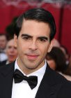
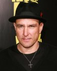

Top News
1 - 20 of 46 Items. <<< Prev | Next >>>
Eli Roth Boards "Cabin Fever Reboot"8 hours ago; Variety - Film News |
 Eli Roth has come on board as an exec producer on the remake of his 2002 horror film "Cabin Fever."
The remake stars Gage Golightly ("Teen Wolf"), Dustin Ingram ("Paranormal Activity 3"), Samuel Davis (TV's "From Dusk Till Dawn"), Matthew Daddario and Nadine Crocker. It uses Roth's original script, which follows a group of college students who rent a cabin for partying and fall victim to a flesh-eating virus. The film started shooting this week in Portland, Ore. Cassian Elwes is executive producing along with Roth, Ike and Jaclyn Ann Suri, plus Peter Fruchtman and Gerald Fructman. Travis Zariwny ("Intruder") is directing and Armory and Pelican Point Media are financing. Producers are Contend's Evan Astrowsky - who produced the original film with Roth - and Armory Films' Chris Lemole and Tim Zajaros. "Travis had an amazing vision for my original script, and, as a scary movie fan, I really wanted to see it"
|
'Arrow' Casts Vinnie Jones to Play Villain Brick8 hours ago; The Wrap |
 The CW's “Arrow” has added yet another villain to its growing roster. British actor Vinnie Jones has been added to play the DC comic book villain known as Brick, an individual with knowledge of the project told TheWrap. See photos: 19 Best and Worst Superheroes to Hit TV: What's Flown? What's Blown? On the show, Jones will portray Danny Brickwell, a notorious gang leader who brings down the Starling City government. On the show, Jones will portray Danny Brickwell, a notorious gang leader who brings down the Starling City government. Unlike the impenetrable skin his comic book counterpart possesses, Jones’ character will be known as “Brick” on the show because he's been shot multiple times and survived each attempt. Jones will appear in episodes 10, 11 and 12 of the show's current season. - Linda Ge |
James Franco Attacks Reporter at Lana Del Rey Concert8 hours ago; E! Online |
James Franco has come under fire after he reportedly tackled a paparazzo, who apparently wants justice following the alleged altercation. The 36-year-old attended the Lana Del Rey concert on Friday night at the Hollywood Forever Cemetery, where he was photographed gleefully running away from a shutterbug lying on the ground beside him with his left fist raised in the air. While it's unclear what occurred between the two, an eyewitness tells E! News that Franco ran head first into the photog and tackled him football style, adding that the thesp was laughing but did not appear to be joking around. |